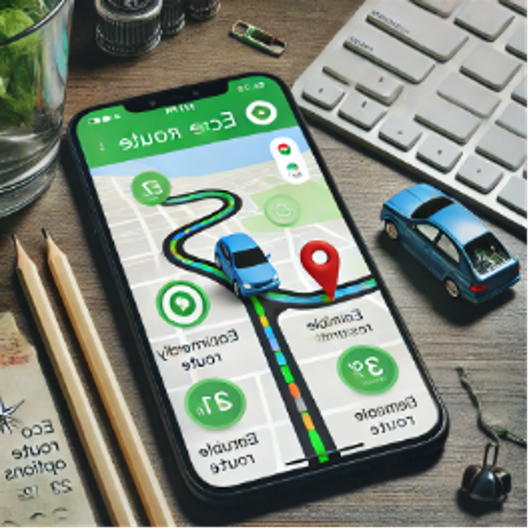
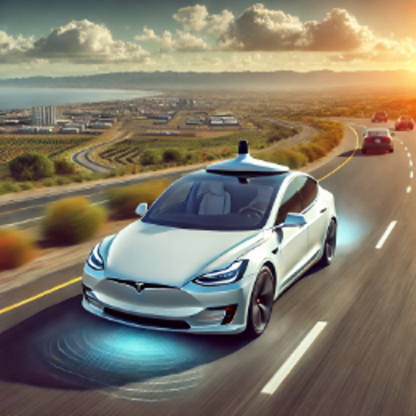
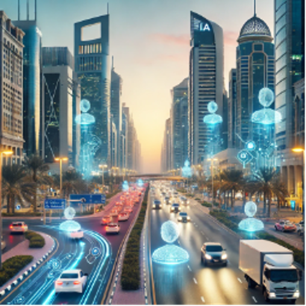
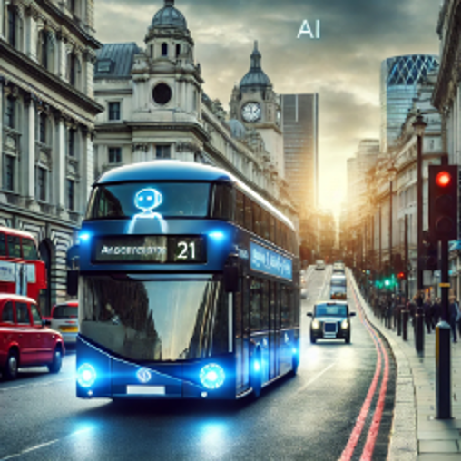

How can we reduce the power consumption of our smartphones in daily use?
Answer: B. Close unused apps Explanation: Many apps run in the background and continue to consume power. Closing these apps not only extends battery life but also reduces unnecessary energy consumption.

Practical Application: In 2021, Google launched the “Eco-friendly Routes” feature, which uses AI algorithms to analyze traffic conditions, road slopes, traffic signals, and driving speeds, recommending the route with the lowest fuel consumption. The primary goal of Google Maps’ “Eco-friendly Routes” feature is to help users reduce:
Answer: B. Fuel consumption and carbon emissions Explanation: The promotion of this feature is expected to reduce over 1 million metric tons of carbon dioxide emissions annually, equivalent to the carbon emissions of 200,000 fuel-powered cars each year.
Many companies use AI to optimize logistics and transportation routes, and the main purpose of doing so is to?
Answer: C. Save fuel and reduce energy consumption Explanation: AI can analyze traffic conditions to find the most efficient routes, reducing transportation time and fuel consumption. This not only cuts costs but also decreases greenhouse gas emissions.

Practical Application: Tesla’s autonomous driving system utilizes AI to optimize acceleration, braking, and driving paths, reducing unnecessary hard braking and rapid acceleration, thus improving the energy efficiency of electric cars. What is one way Tesla’s self-driving cars use AI to improve energy efficiency?
Answer: B. By reducing unnecessary hard braking and rapid acceleration Explanation: Tesla’s AI technology significantly reduces energy consumption in electric vehicles while improving driving smoothness and safety.
Which of the following activities is most likely to consume large amounts of data center energy?
Answer: C. Mining cryptocurrencies Explanation: Mining cryptocurrencies, such as Bitcoin, requires a lot of computing power and consistently high energy consumption, making it one of the activities that cause data centers to consume a lot of energy.

Practical Application: The city has installed AI-controlled traffic signals on major roads, which can monitor traffic flow in real-time and intelligently adjust the timing of traffic lights to reduce the time vehicles spend waiting at intersections. What effect has Abu Dhabi’s AI-driven intelligent traffic management system achieved?
Answer: B. Reduced traffic congestion by 10% Explanation: This system has helped Abu Dhabi reduce traffic congestion by 10%, and with reduced waiting times at signals, fuel consumption also decreases, leading to lower carbon emissions.
One of the ways AI can help reduce energy consumption in homes is by?
Answer: B. Automatically adjusting the temperature of the heating or cooling system Explanation: AI can detect the temperature of a home and automatically adjust the heating or cooling systems based on indoor and outdoor environments, ensuring user comfort without consuming excessive energy.

Practical Application: London’s bus companies use AI technology to analyze passenger demand, traffic conditions, and weather patterns at different times of the day, dynamically adjusting bus routes and departure frequencies to reduce empty trips. How has London used AI to optimize its bus services?
Answer: B. By analyzing passenger demand and traffic conditions to adjust bus routes and schedules dynamically Explanation: This intelligent scheduling system helps London significantly reduce overall energy consumption in its bus fleet, improve operational efficiency, and reduce resource waste caused by over-scheduling.
Which of the following can help reduce energy consumption in a data center?
Answer: C. Using a more efficient cooling system Explanation: Data centers require a lot of cooling to keep servers running. Using efficient cooling systems can significantly reduce energy consumption, which is one of the key ways to save energy in data centers today.
Practical Application: In Foxconn’s factories, AI-driven autonomous trucks are used for internal logistics transport. How does Foxconn utilize AI-driven autonomous trucks in their factories?
Answer: B. By planning optimal routes, minimizing wait times, and adjusting transport schedules based on cargo volume Explanation: Foxconn’s AI-automated transport system reduces energy consumption and carbon emissions in internal transportation, improving operational efficiency within the factory.
🎉 Congratulations! You have completed all the questions! 🎉